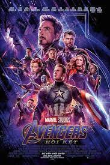
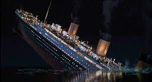
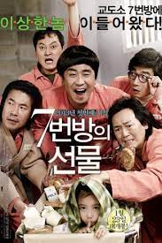

I have seen a lot of film in some type, but i like the super hero, romantic and family love much. Here is the top 3 film that i really impress:
- Avengers: this is the most super hero movie of marvel that i like most because it story and CGI

- Titanic: this is 1 of the film that make me tear at the final screen, i can't forget the moment that Jack sinked into the water to sacrified for his lover.

- The miracle at cell number 7: this is second that take my tears cause it transfer the story so good, the cute of the daughter and the unluckyness of the father all of them make me feel really upset
